Training together, through the screen
bim brought social interaction to fitness by letting people work out together over video call. This is how it turned into a tool coaches could build a business on, and the design system that had to serve both audiences at once.
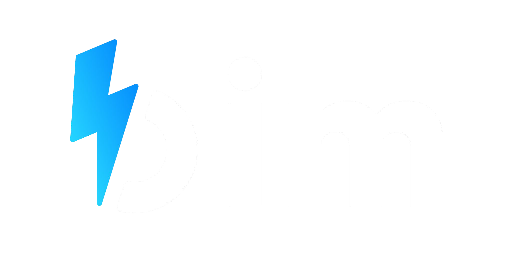
The challenge
The pandemic made bim's premise obvious and then took it away again. Daily active users fell, and the business model had to change with them.
- Role
- Product designer and product manager
- Method
- Sprints, user-centred design
- Scope
- Interviews with coaches, personas, prioritisation with the team, wireframes and flows, the interface, user testing, and the design system
The vision
Today, through the communities, people interact with their friends, coworkers or a coach to chat, exchange, compete and motivate each other.
The direction the company wanted next was to sell bim to coaches as a tool: a way to grow their communities and earn from them, by running classes with students and with companies.
That changes who the product is for. It has two audiences now, and they do not want the same thing from it.
bim has to stay fun for the people training, and at the same time be competent and professional for the coaches and the companies paying for it.
The tension to design againstThe team
Ten people, working in sprints. One designer, which is why the design system mattered as much as the screens did.
- Building
- 6 developers and 1 tester
- Business
- The CEO, and 1 business and marketing
- Design
- 1 product designer and manager
Research
The new direction pointed at coaches, and nobody on the team had designed for them before. So we went and asked them.
- 1Find the coachesRecruiting people who actually teach for a living, not people who go to the gym.
- 2Interview in pairsSemi-structured interviews run by two people at a time, marketing and design together.
- 3PersonasNeeds and pain points, written down so the whole team could argue with the same material.
- 4Define and prioritiseCard sorting on what came out of the interviews, then a scored list.
- 5WireframingFlows first, screens second.
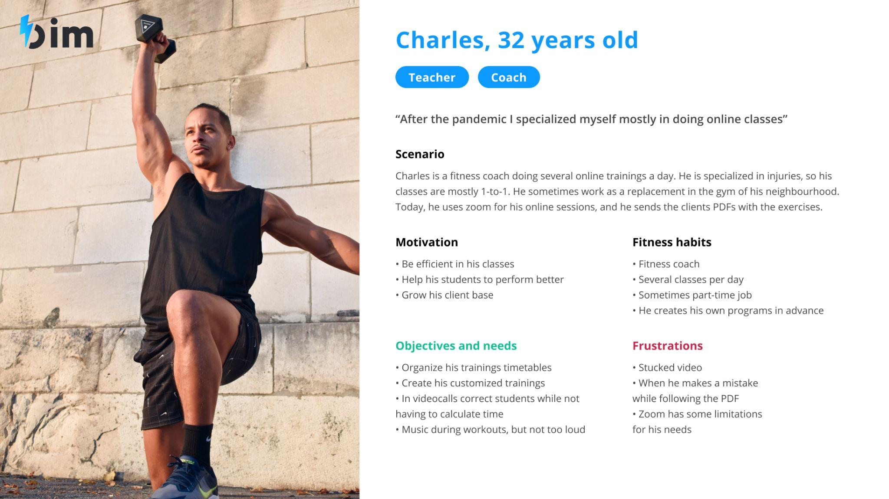
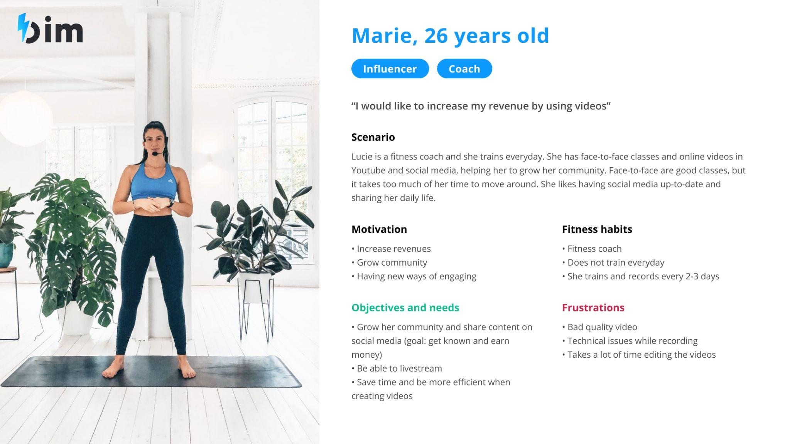
What to build first
Card sorting on the key points from the interviews. Each person proposed functionalities against a need or a pain point, we discussed what was missing, then everyone prioritised individually before we compared.
| Functionality | Priority | Technical effort | Design effort |
|---|---|---|---|
| Create a coach account, or switch to coach | 1 | Low | Low |
| Improvement of communities | 2 | Low | Medium |
| Video recording | 2 | High | High |
| Free session | 3 | Low | Medium |
Wireframing started from the flows rather than the screens, and every flow went through the same three questions.
-
Are there any missing paths?
The ones nobody drew because nobody had hit them yet.
-
Are there constraints in this flow?
Technical or business, asked while the flow was still cheap to change.
-
Can the path be improved?
Fewer steps, fewer decisions, less waiting.
The design solution
Five pieces of work, each one at a different point in the pipeline. This is where they stood.
-
Onboarding
Completed and live.
-
Improvement of communities
Completed and live.
-
Video recording and uploading
In the development sprint.
-
Free session
In the design sprint.
-
Subscription, through Purchasely
In validation.
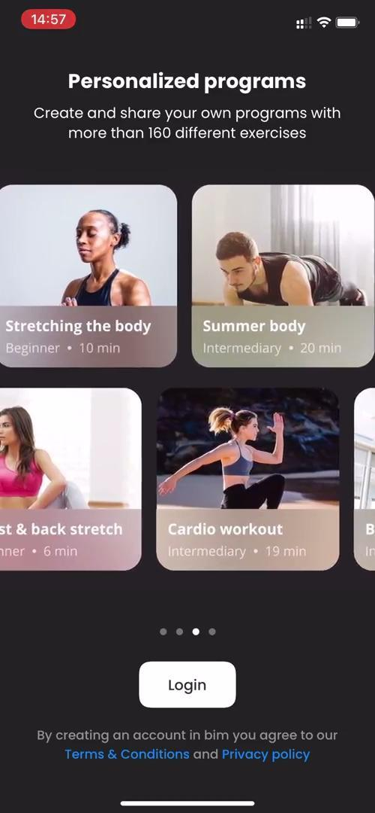
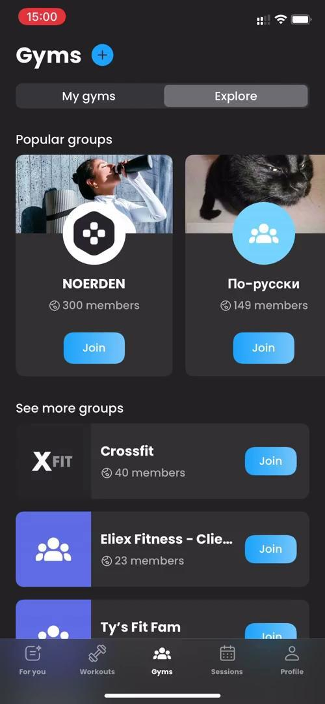
A session, running
The exercise, the timer and the other people in the room, on a phone and on a tablet at the same time.
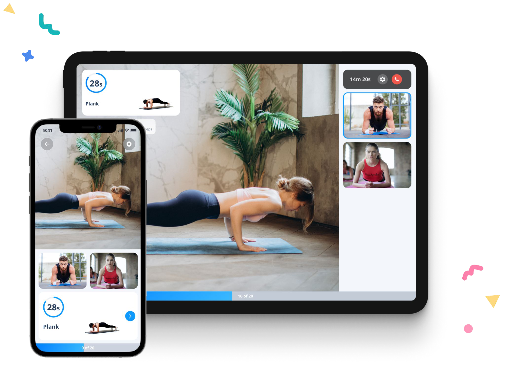
User testing
Twice, on either side of the build. Task analysis before it existed, and numbers once it did.
- 1Before developmentTask analysis with friends, family and the partner coaches.
- 2After developmentGoogle Analytics, Amplitude and satisfaction surveys.
What came back
-
Onboarding was too long
We cut it down and made some of the fields optional.
-
Videos sat outside the communities
At the beginning they were not inside the group they belonged to, which is where people looked for them.
-
Cameras go off
In most live classes people turn their own camera off, which is worth knowing before designing a screen built around faces.
The design system
One designer, six developers and a product with two audiences. The system had to hold the visual identity together and be specific enough to hand over, in light mode and in dark mode, without being rewritten every sprint.
Written as a living document. The parts that were still being decided are marked as such here, the same way they were marked in it.
Logo
The mark is meant to express energy, movement and power. Three rules cover everywhere it lands.
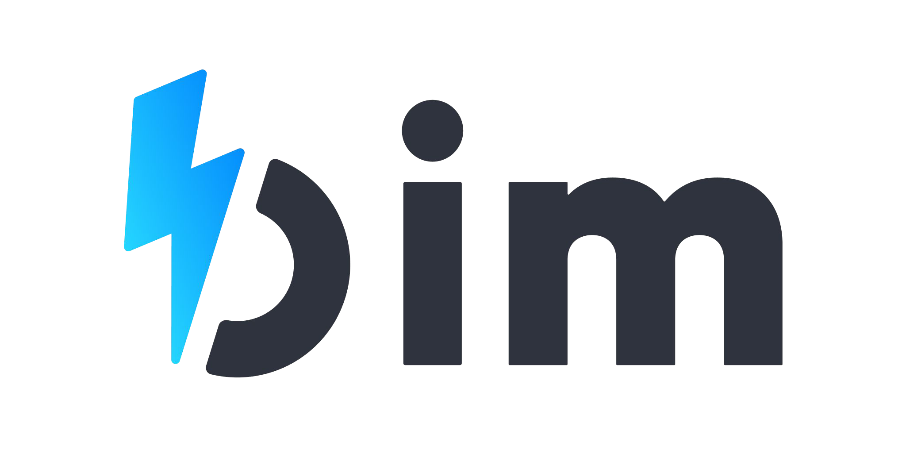
-
Light or dark ground
Use the version that corresponds to it.
-
Colourful ground
Use the logo fully in white.
-
On top of an image
Use the white logo, and darken the area of the image it sits on.
Colour, mode by mode
The app has a light mode and a dark mode, so the palette splits three ways: colours only for light, colours only for dark, and colours shared by both. Dark mode is built from white at a given opacity rather than from separate greys, which is why its swatches are shown over the dark card they sit on.
Light mode
Text, backgrounds and cards.
- Title#2E333E
- Body text#80848F
- Placeholder#AAADB4
- Medium grey#C3CBD7
- Light elements#F5F6F8
- Light card#FFFFFF
- Light background#F5F6F8
- White background#FFFFFF
Dark mode
The same roles, built from white at four opacities over two greys.
- Title#FFFFFF
- Body text#FFFFFF70% opacity
- Placeholder#FFFFFF50% opacity
- Medium grey#FFFFFF40% opacity
- Light elements#FFFFFF10% opacity
- Dark card#303030
- Dark background#212121
Colour, shared by both
The primary blue carries the main elements. The gradients belong to badges and challenges, and they are the part of the palette that makes the product feel like a game rather than a tool.
Primary
- Primary#0E99FF
- Primary gradient#0E99FF#6CBFFC
Gradients
Badges and challenges, the same in both modes.
- Purple#5162FC#9A4BFE
- Pink#B47CFB#FF6565
- Red#FCB851#FE4B84
- Yellow#FAFF1E#FF8A1F
- Lime#EFF23B#54EF5A
- Green#4FE1EB#1FCE70
- Light blue#2BE3FF#0287FD
- Dark blue#498EF7#141D6F
States
Warnings, success, notifications and ratings.
- Error#E85353
- Notifications#FF6053
- Ratings#FFC700
- Success#61B779
Typography
bim had just moved off Open Sans and onto Poppins when this was written, and the decision was not settled. Poppins, Noto Sans and Maven Pro were all still in play, so the type scale was left open rather than written down and immediately contradicted.
This is the one part of the system that stayed unfinished, and it is in the document as an open question rather than as a rule.
Iconography
A linear set, drawn to be easier to tell apart at a glance and to make the app read cleaner and more current. Three families: utility, video call, and fitness.
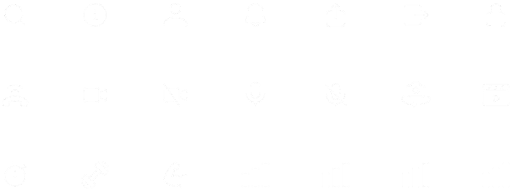
They were drawn ahead of the integration, for the developer to swap into the app once the set was complete.
Components
Buttons and cards, documented as specimens so they could be picked up from the file rather than measured off a screen.
Buttons
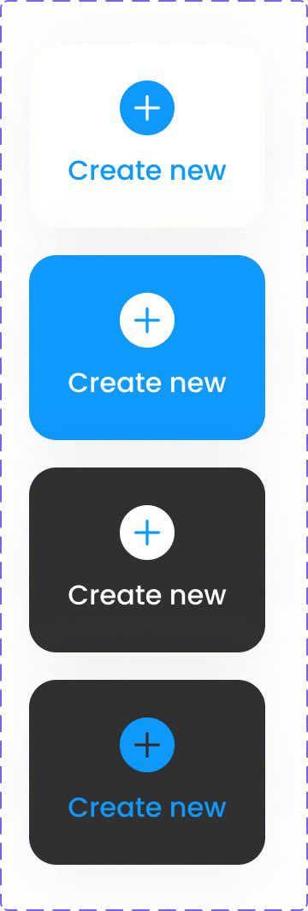
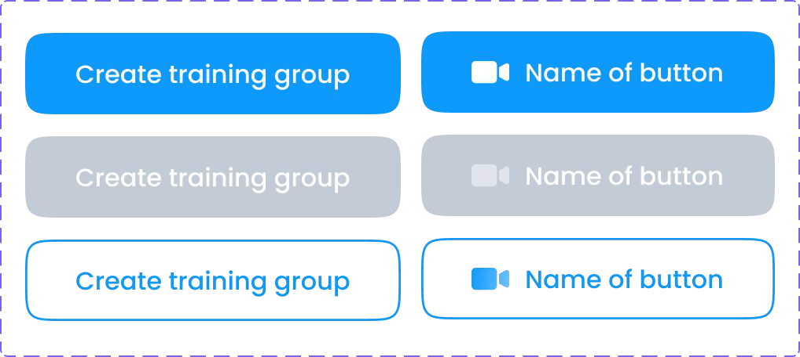
Cards
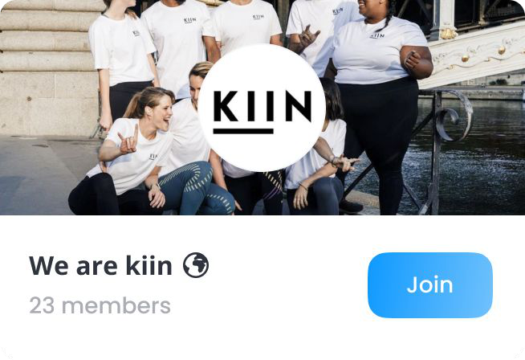
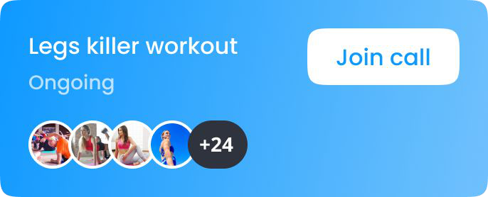
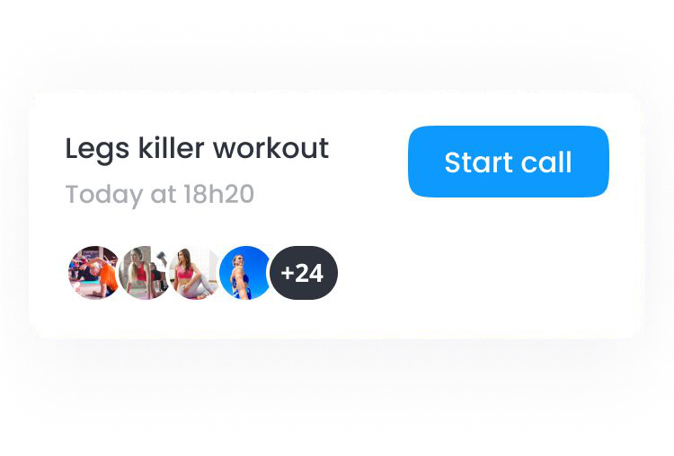
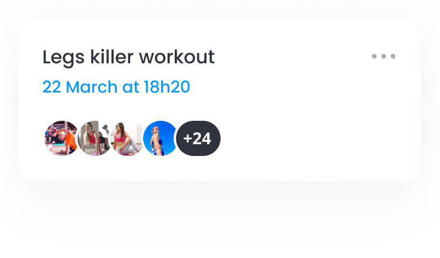
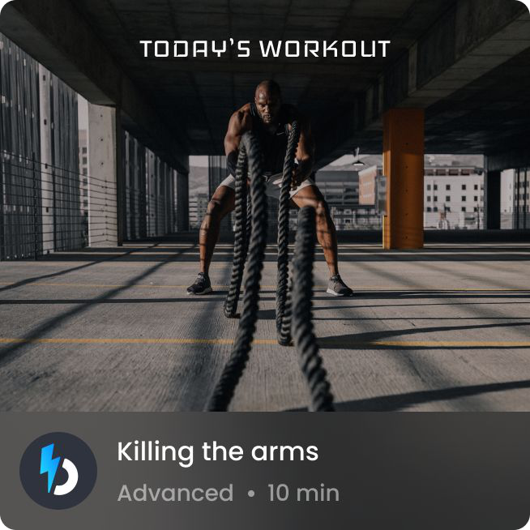
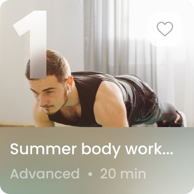
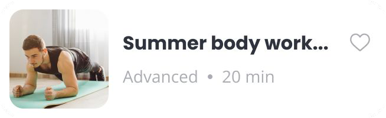
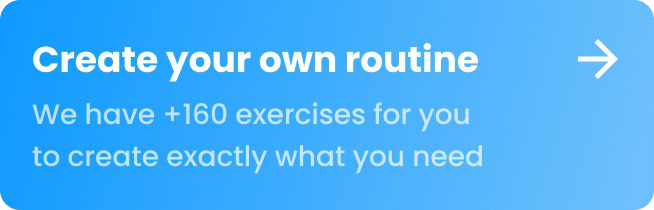
Imagery
Two rules, one per kind of image, because the two do completely different jobs.
Workouts
Colourful, someone actually doing the sport, and high quality. Never blurred.
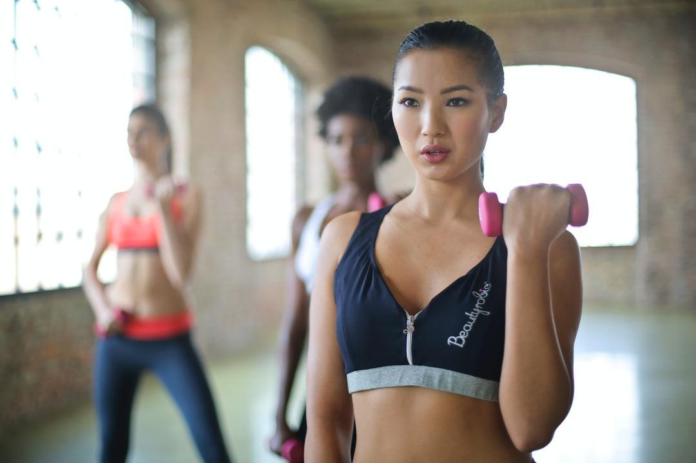
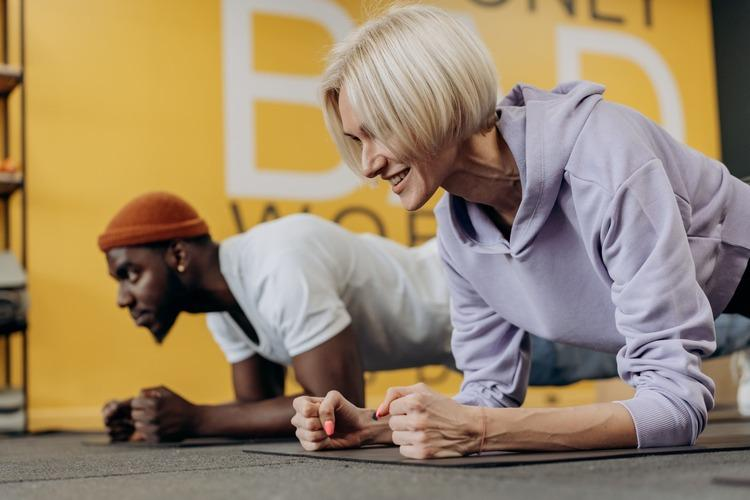
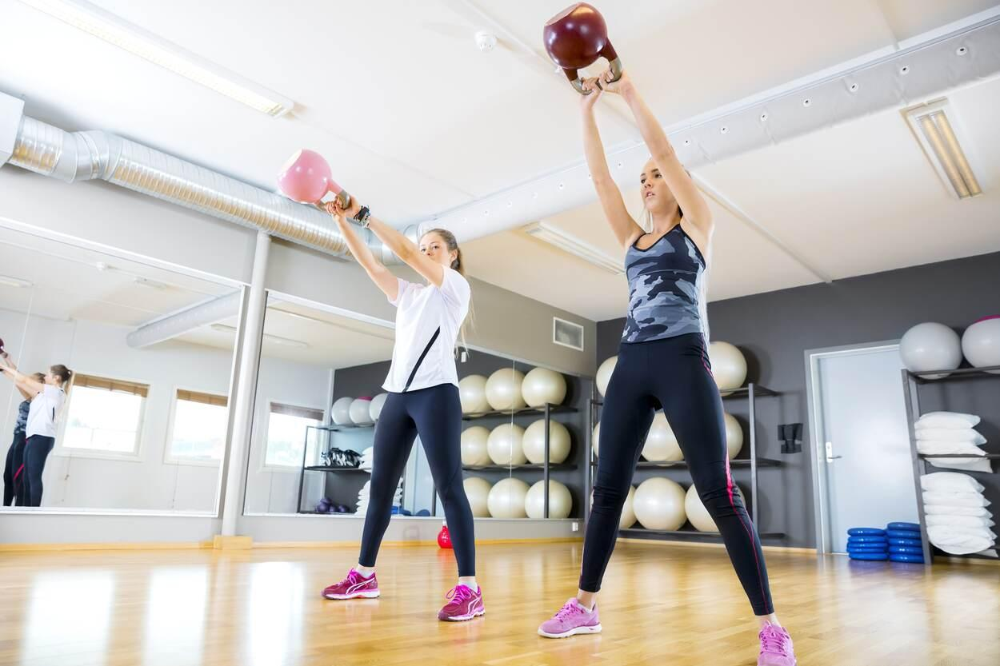
Exercises
Short mp4 clips played on a loop. The background has to be white, so the set stays consistent and the person doing the exercise is the only thing you look at.
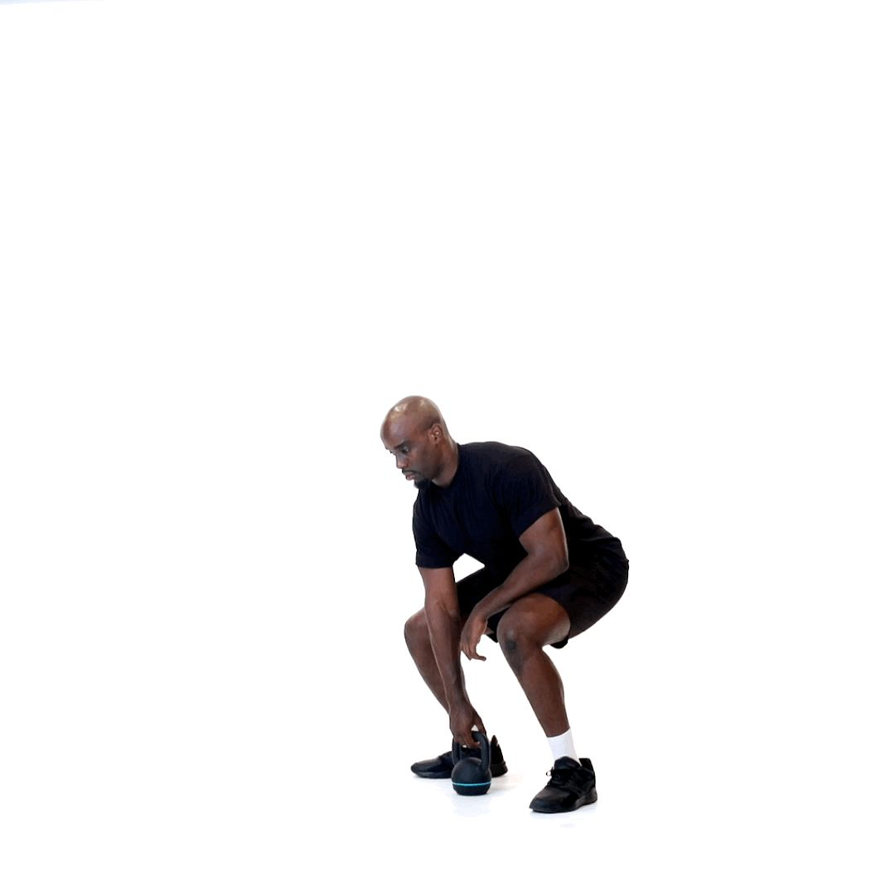
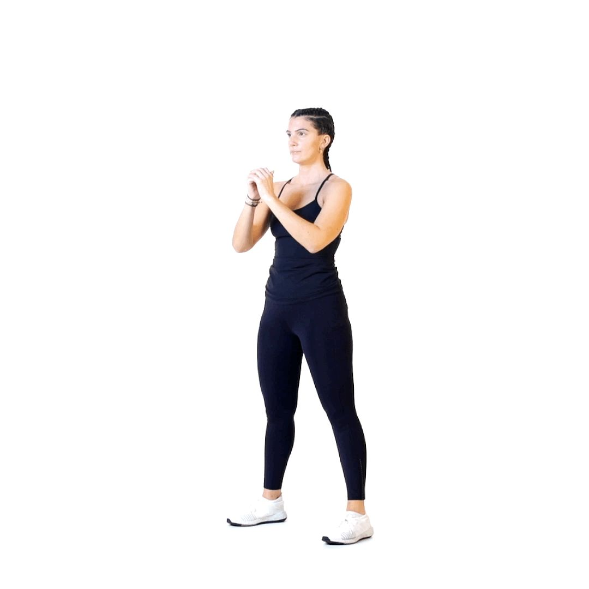
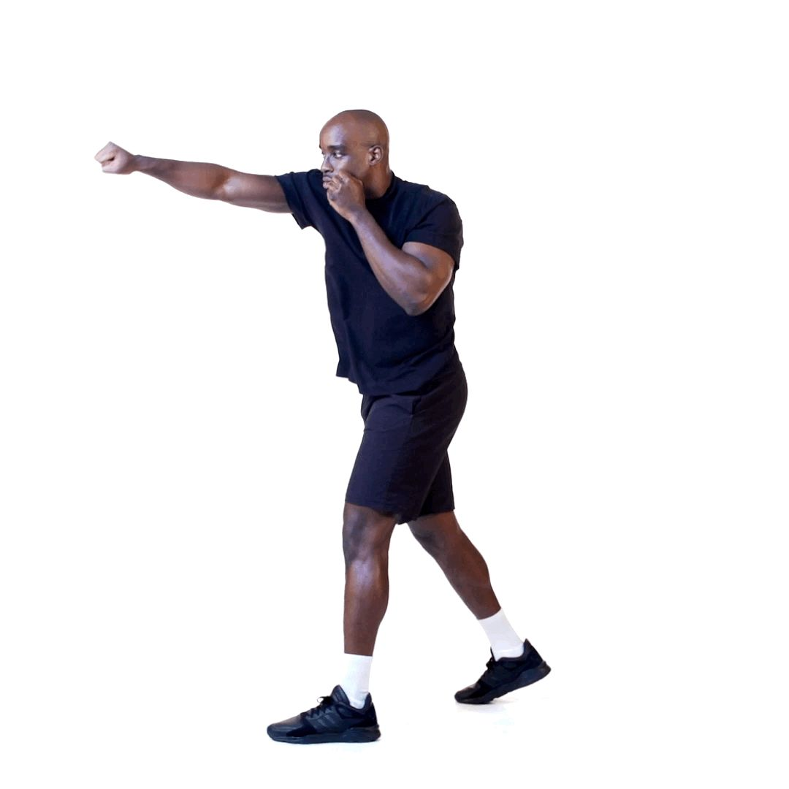